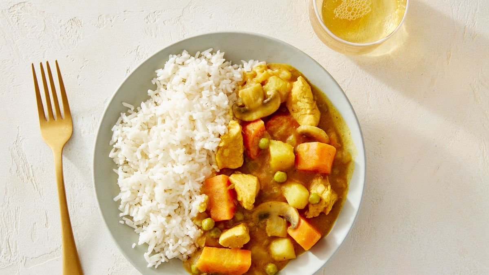

Back to Main Page
Japanese Golden Curry

- Gather your ingredients (protein of choice, garlic, carrots, potatoes, rice, Golden Curry cubes, onions
- Prepare your ingredients by beginning to cook your rice, peeling the carrots and potatoes, cutting them into bite sized pieces, cutting your onions into thick wedges, and cutting your chicken into your preferred size
- Add neutral oil to large pot or high-side pan, add onion over medium heat
- Saute onions in tall pan until tender and golden
- Addd garlic and chicken until no longer pink on the outside
- Cover iingredients with chicken broth OR water (depending on your sodium intake)
- Add carrots and potatoes; the broth should barely cover all the ingredients
- Once the potatoes are fork tender, add Golden Curry cubes
- Simmer and reduce until the curry has thickened
- Plate over fresh rice and enjoy!